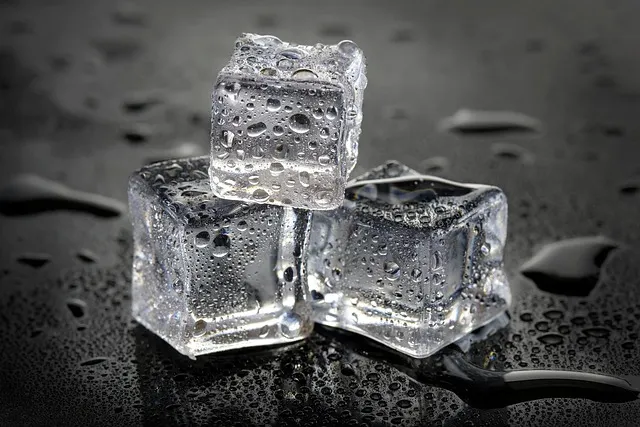
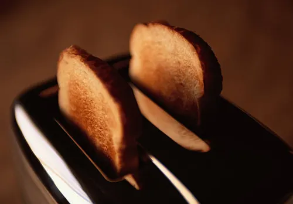

My Projects & Case Studies

Created Room Tempature Ice
- The Problem: Ice is difficult to transport and melts too easy
- My Process: All I had to do was give the ice sunscreen so it didn't melt in the sun. It was simple really.
- The Challenges: Sunscreen tastes bad so I had to product test differnet types to find the tasty kind
- Tech Used: SPF50 Sunscreen, Ice
- Links: GitHub Repo | Live Ice Camera

Built the World's First Time-Traveling Toaster
- The Problem: When it takes more than a min
- My Process: I combined a toaster with a wormhole generator purchesed on ebay. All it took was aligning the flux coils with the toster coils and I could start toast anytime and send it to myself as soon as I woke up
- The Challenges: A temporal glitch caused the toaster to briefly become my own grandfather. After debugging the paradox loop, I restored the toaster to its proper function and timeline.
- Tech Used: Wormhole Generator,Toaster
- Links: GitHub Repo | Live Demo (Temporal Stability Not Guaranteed)